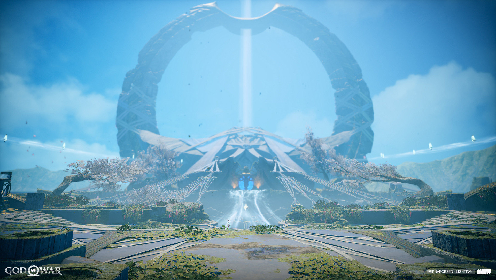

Alfheim
 O brilhante reino de Alfheim é adornado com uma flora abundante e colorida, ao lado de uma fauna luminosa que brilha nas terras e nos céus do reino dos Elfos. A arquitetura artística dos Elfos inclui seus cristais de luz únicos, pedras cor de safira alimentadas pela Luz de Alfheim que são conectadas a estruturas para criar pontes feitas de luz sólida.
A Luz de Alfheim também é onde o Bifröst obtém sua fonte de energia para atravessar os reinos através do Templo de Týr. Enquanto a Luz está no lar de todos os Elfos,
as sub-raças da Luz e das Trevas estão em guerra por sua posse há séculos, com a Luz de Alfheim tendo mudado de mestre para frente e para trás mais de duzentas e treze vezes.
Quando os Elfos da Luz controlam a Luz de Alfheim, a Luz brilha livremente e os céus de seu reino são adornados de azul. Quando os Elfos Negros o tiverem,
a Luz está escondida por uma grande planta de algum tipo e seus céus estão tingidos de vermelho.
No entanto, o Vanir Freyr parecia ter sido o único a dar o controle absoluto da Luz aos Elfos da Luz por mais tempo, já que os seres luminosos o nomearam seu senhor e deram a residência de Deus em seu reino.
Provavelmente foi o recente desaparecimento dos Vanir que deu aos Elfos Negros a vantagem de que precisavam para recuperar a Luz para si mesmos.
Alfheim já estava escurecendo quando a irmã de Freyr, Freya, trouxe Kratos e seu filho Atreus para o reino dos Elfos a fim de recuperar uma porção da Luz para seus próprios propósitos. Uma vez que os Elfos Negros estavam escondendo a Luz e qualquer acesso a ela, os Deuses forasteiros foram forçados a se opor aos Elfos Negros para mais uma vez liberar a Luz, um conflito que terminou com a morte do Rei Elfo Negro.
Com os Dark Elves derrotados e os Light Elves liberados de suas garras, Alfheim mais uma vez brilhou intensamente.